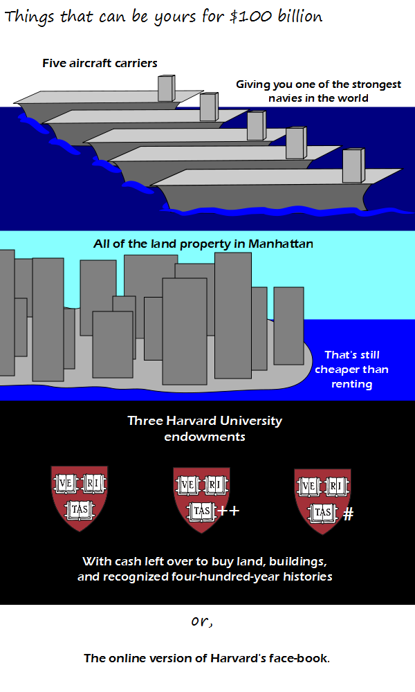

Comic JK 864
When I Feel Like It
⇤
<
?
>
⇥

⇤
<
?
>
⇥
Forum
.
RSS
.
Digg
.
Facebook
.
Reddit
.
Twitter
.
Stumbleupon
Enter your thoughts on number 864 here. Please, no spamming, trolling, phreaking, phreaking, or listing your anus on the stock exchange. The Natives who sold Manhattan were actually laughing: they were a nomadic tribe and didn't live there - they were just passing through. The tribe who DID live there (and got nothing) were REALLY pissed! YOU CAN'T EAT MONEY! > you can, but it has little to no nutritional value. >> better to spend a little money to buy food, or to have something cooked... seriously though, the characters who proclaim "you can't eat money" seem to miss the point that it's a medium of exchange... >>> The point is, that if the food supply is scarce but people have over-inflated amounts of money, simply acquiring money isn't very important. >>>> That still leaves you better off than the people living in the same food-scarce-overinflated-money enviroment, and who DON'T have a big pile of cash to compensate. >>>>> That depends on if they're the ones that actually produce the food or not. >>>>>>which, yet again, misses the point that the money can be used to pay for food... >>>>>>> Which misses the point that if the people producing the food need it to keep themselves alive, they won't sell it. >>>>>>>> QED ***** >>>>>>>>>which still misses the point that you CAN eat money! >>>>>>>>>>which misses the point there is no nutrition, and thus you can't eat only money for an extended period. >>>>>>>>>>>which misses the point that money can be used to *pay* to bring in food from other areas... of course, if there are no other areas that actually have a food surplus, then there's a bigger problem than pondering the concept of "payment"... >>>>>>>>>>>> That point was already made at ">>>>>>>". Always better to have the physical commodity than a promise. I like your aircraft carriers. What's with the Veritas, Veritas++, and Veritas# ? > C language evolution, obviously. It reminds me of the three dozen versions of "Street Fighter II". >> You could create three different versions of Harvard with the money >>> If there was a Harvard++, it might spawn Zuckerberg++ and Facebook++, and that makes me very scared. I just love these comment boxes. It's sort of like 4chan. >It's also like a game of telephone. You say something, come back a few minutes later, and see what kind of crack monkeys it evolves into. >>And smtms fnd tht yur ans has chngd wht you sid to be unrecognizable, and therefore no lngr anything to do with yu. What's bad though is when they don't change all of it prprly, and ny sense and looks all mangled editing shells. >>>BUMP. >>>>I didn't know we could do that...! >>>>>MOAR! >>>>>I invented it! I also discovered the disappearing backslashes� and contributed in making the "Next" and "Previous" arrows slightly bigger when the site was redesigned. >>>>>> Aren't you special? >>>>>>> No, he's your pet hamster. >>>>>>>> Who's to say his pet hamster isn't special? >>>>>>>I, for one, am impressed by his accomplishments.